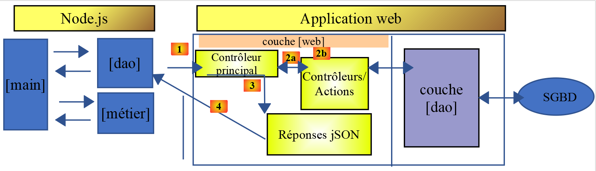
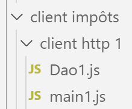
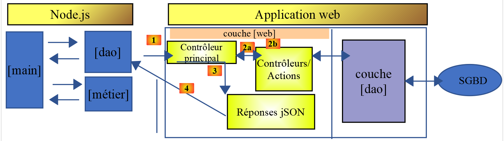
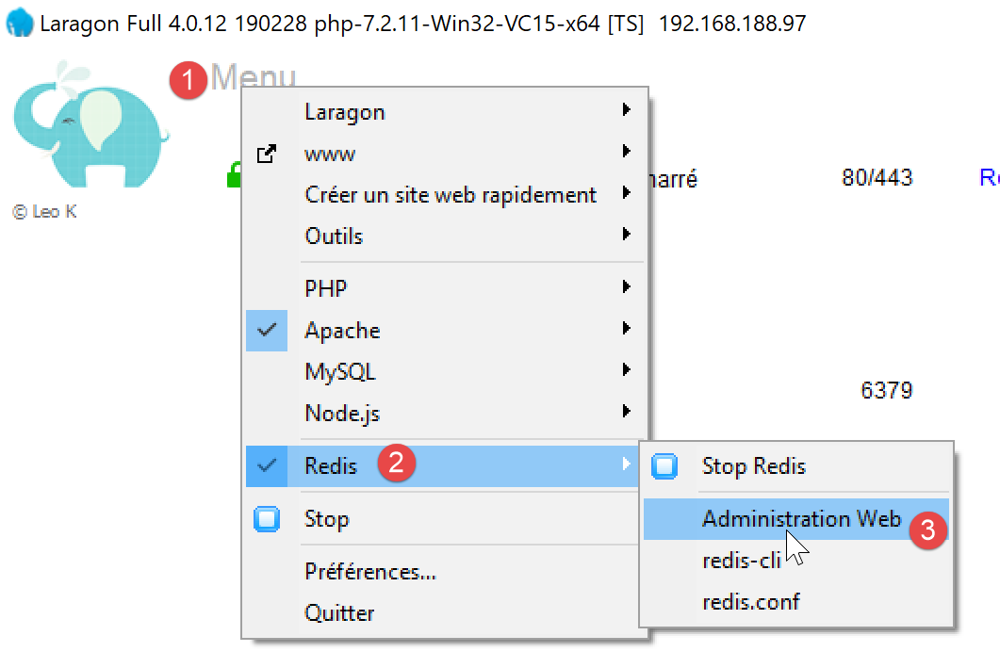
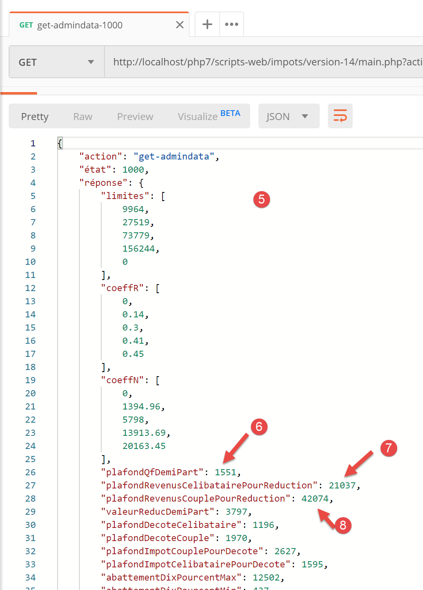
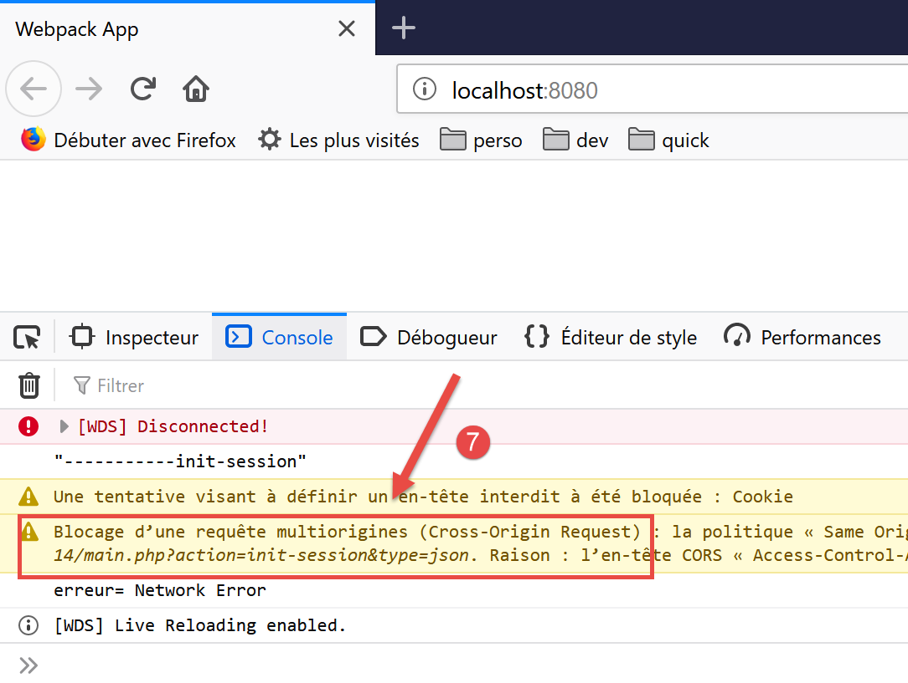
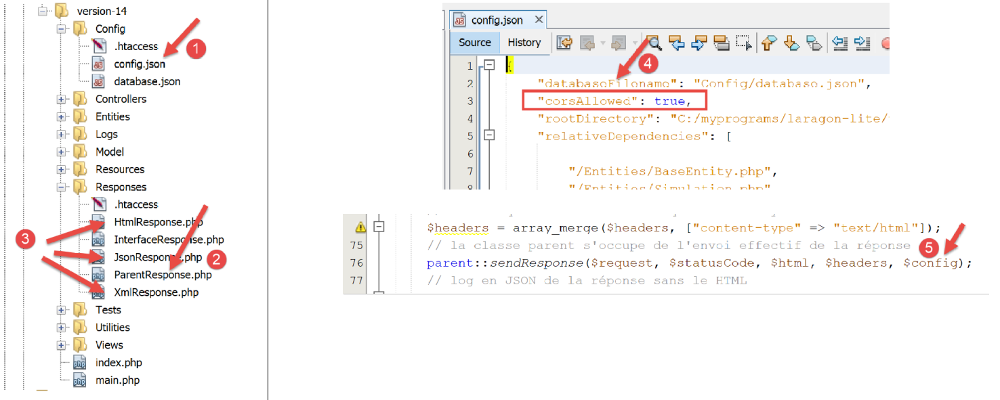
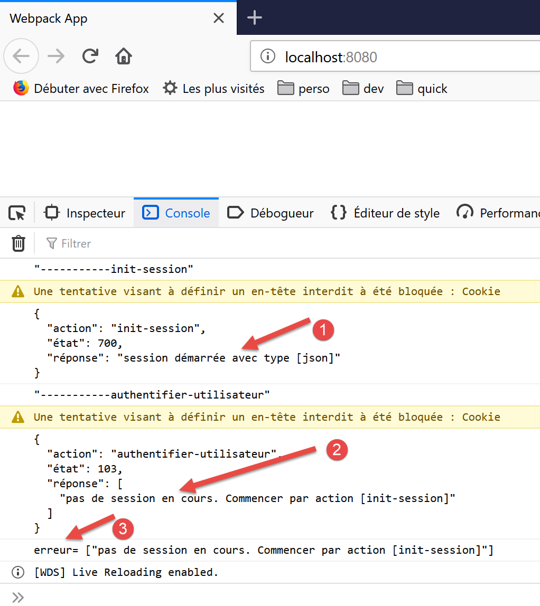
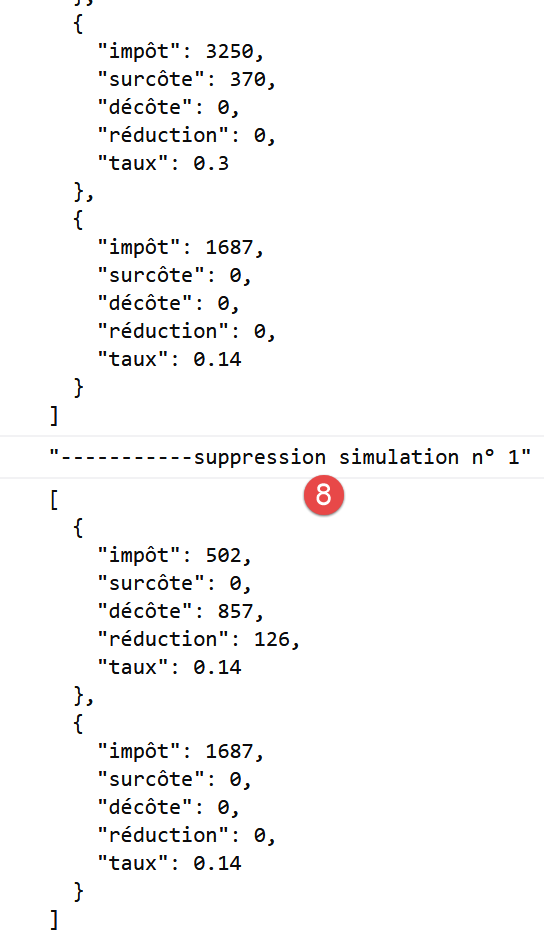

14. Clientes HTTP javascript del servicio de cálculo de impuestos
14.1. Introducción
Aquí se propone escribir un [Node.js] cliente para la versión 14 del servicio de cálculo de impuestos. La arquitectura cliente/servidor será la siguiente:

Examinaremos dos versiones del cliente:
- La versión 1 del cliente tendrá la siguiente [main, dao] estructura en capas:

- La versión 2 del cliente tendrá una [main, business logic, DAO] estructura. La [lógica de negocio] capa del servidor se trasladará al cliente:

14.2. Cliente HTTP 1

Como se ha mencionado, el cliente HTTP 1 implementa la siguiente arquitectura cliente/servidor:

Ejecutaremos:
- la [DAO] capa como clase;
- la [main] capa como un script que utiliza esta clase;
14.2.1. La capa [dao]
La [dao] capa será implementada por la siguiente clase [Dao1.js]:
'use strict';
// imports
import qs from 'qs'
class Dao1 {
// constructor
constructor(axios) {
// axios library for making HTTP requests
this.axios = axios;
// session cookie
this.sessionCookieName = "PHPSESSID";
this.sessionCookie = '';
}
// initialize session
async initSession() {
// HTTP request options [get /main.php?action=init-session&type=json]
const options = {
method: "GET",
// URL parameters
params: {
action: 'init-session',
type: 'json'
}
};
// Execute the HTTP request
return await this.getRemoteData(options);
}
async authenticateUser(user, password) {
// HTTP request options [post /main.php?action=authenticate-user]
const options = {
method: "POST",
headers: {
'Content-type': 'application/x-www-form-urlencoded',
},
// POST body
data: qs.stringify({
user: user,
password: password
}),
// URL parameters
params: {
action: 'authenticate-user'
}
};
// execute the HTTP request
return await this.getRemoteData(options);
}
// calculate tax
async calculateTax(married, children, salary) {
// HTTP request options [post /main.php?action=calculate-tax]
const options = {
method: "POST",
headers: {
'Content-type': 'application/x-www-form-urlencoded',
},
// POST body [married, children, salary]
data: qs.stringify({
married: married,
children: children,
salary: salary
}),
// URL parameters
params: {
action: 'calculate-tax'
}
};
// execute the HTTP request
const data = await this.getRemoteData(options);
// result
return data;
}
// list of simulations
async listSimulations() {
// HTTP request options [get /main.php?action=list-simulations]
const options = {
method: "GET",
// URL parameters
params: {
action: 'list-simulations'
},
};
// execute the HTTP request
const data = await this.getRemoteData(options);
// result
return data;
}
// list of simulations
async deleteSimulation(index) {
// HTTP request options [get /main.php?action=delete-simulation&number=index]
const options = {
method: "GET",
// URL parameters
params: {
action: 'delete-simulation',
number: index
},
};
// execute the HTTP request
const data = await this.getRemoteData(options);
// result
return data;
}
async getRemoteData(options) {
// for the session cookie
if (!options.headers) {
options.headers = {};
}
options.headers.Cookie = this.sessionCookie;
// execute the HTTP request
let response;
try {
// asynchronous request
response = await this.axios.request('main.php', options);
} catch (error) {
// The [error] parameter is an exception instance—it can take various forms
if (error.response) {
// the server's response is in [error.response]
response = error.response;
} else {
// we throw the error again
throw error;
}
}
// response is the entire HTTP response from the server (HTTP headers + the response itself)
// retrieve the session cookie if it exists
const setCookie = response.headers['set-cookie'];
if (setCookie) {
// setCookie is an array
// we search for the session cookie in this array
let found = false;
let i = 0;
while (!found && i < setCookie.length) {
// search for the session cookie
const results = RegExp('^(' + this.sessionCookieName + '.+?);').exec(setCookie[i]);
if (results) {
// store the session cookie
// eslint-disable-next-line require-atomic-updates
this.sessionCookie = results[1];
// found
found = true;
} else {
// next element
i++;
}
}
}
// The server's response is in [response.data]
return response.data;
}
}
// export the class
export default Dao1;
- Aquí estamos usando lo aprendido en la sección enlazado, donde introdujimos la [axios] biblioteca, que nos permite hacer peticiones HTTP tanto en [node.js] como en un navegador. Veremos específicamente el script en la sección enlazado;
- líneas 9-15: el constructor de la clase. Esta clase tendrá tres propiedades:
- [axios]: el [axios] objeto utilizado para realizar peticiones HTTP. Esto es pasado por el código de llamada;
- [sessionCookieName]: dependiendo del servidor, la cookie de sesión tiene diferentes nombres. Aquí es [PHPSESSID];
- [sessionCookie]: la cookie de sesión enviada por el servidor y almacenada por el cliente;
- líneas 53-76: la función asíncrona [calcularImpuesto] realiza la petición [post /main.php?action=calcular-impuesto] colocando los parámetros [casado, hijos, salario]. Devuelve la cadena JSON enviada por el servidor como un objeto JavaScript;
- líneas 79-92: la función asíncrona [listSimulaciones] realiza la petición [get /main.php?action=list-simulaciones]. Devuelve la cadena JSON enviada por el servidor como un objeto JavaScript;
- líneas 95-109: La función asíncrona [deleteSimulation] realiza la petición [get /main.php?action=delete-simulation&number=index]. Devuelve la cadena JSON enviada por el servidor como un objeto JavaScript;
- línea 121: se utiliza la notación [this.axios] porque aquí, el [axios] objeto pasado al constructor se ha almacenado en la [this.axios] propiedad;
- línea 161: la [Dao1] clase se exporta para que pueda ser utilizada;
14.2.2. El script [main1.js]
El [main1.js] script realiza una serie de llamadas al servidor utilizando la [Dao1] clase:
- inicialización de una sesión JSON;
- autenticación con [admin, admin];
- solicita tres cálculos de impuestos;
- solicita la lista de simulaciones;
- elimina uno de ellos;
El código es el siguiente:
// import axios
import axios from 'axios';
// import the Dao1 class
import Dao from './Dao1';
// asynchronous function [main]
async function main() {
// Axios configuration
axios.defaults.timeout = 2000;
axios.defaults.baseURL = 'http://localhost/php7/scripts-web/impots/version-14';
// instantiate the [dao] layer
const dao = new Dao(axios);
// using the [dao] layer
try {
// initialize session
log("-----------init-session");
let response = await dao.initSession();
log(response);
// authentication
log("-----------authenticate-user");
response = await dao.authenticateUser("admin", "admin");
log(response);
// tax calculations
log("-----------calculate-tax x 3");
response = await Promise.all([
dao.calculateTax("yes", 2, 45000),
dao.calculateTax("no", 2, 45000),
dao.calculateTax("no", 1, 30000)
]);
log(response);
// list of simulations
log("-----------list-of-simulations");
response = await dao.listSimulations();
log(response);
// Delete a simulation
log("-----------deleting simulation #1");
response = await dao.deleteSimulation(1);
log(response);
} catch (error) {
// log the error
console.log("error=", error.message);
}
}
// log JSON
function log(object) {
console.log(JSON.stringify(object, null, 2));
}
// execution
main();
Comentarios
- línea 2: importar la [axios] biblioteca;
- línea 4: importar la [Dao] clase;
- línea 7: la [main] función que se comunica con el servidor es asíncrona;
- líneas 9-10: configuración por defecto para que las peticiones HTTP se envíen al servidor:
- línea 9: [tiempo de espera] de 2 segundos;
- línea 10: todas las URL llevan como prefijo la URL base de la versión 14 del servidor de cálculo de impuestos;
- línea 12: la [Dao] capa está construida. Ahora se puede utilizar;
- líneas 46-48: la función [log] se utiliza para mostrar la cadena JSON de un objeto JavaScript de forma formateada: verticalmente con dos espacios de sangría (3er parámetro);
- líneas 15-18: inicialización de la sesión JSON;
- líneas 19-22: autentificación;
- líneas 23-30: se solicitan tres cálculos de impuestos en paralelo. Gracias a [await Promise.all], la ejecución se bloquea hasta obtener los tres resultados;
- líneas 31-34: lista de simulaciones;
- líneas 35-38: supresión de una simulación;
- líneas 39-42: gestión de posibles excepciones;
Los resultados de la ejecución son los siguientes:
[Running] C:\myprograms\laragon-lite\bin\nodejs\node-v10\node.exe -r esm "c:\Data\st-2019\dev\es6\javascript\client impôts\client http 1\main1.js"
"-----------init-session"
{
"action": "init-session",
"status": 700,
"response": "session started with type [json]"
}
"-----------authenticate-user"
{
"action": "authenticate-user",
"status": 200,
"response": "Authentication successful [admin, admin]"
}
"-----------calculate-tax x 3"
[
{
"action": "calculate-tax",
"status": 300,
"response": {
"married": "yes",
"children": "2",
"salary": "45000",
"tax": 502,
"surcharge": 0,
"discount": 857,
"reduction": 126,
"rate": 0.14
}
},
{
"action": "calculate-tax",
"status": 300,
"response": {
"married": "no",
"children": "2",
"salary": "45000",
"tax": 3250,
"surcharge": 370,
"discount": 0,
"reduction": 0,
"rate": 0.3
}
},
{
"action": "calculate-tax",
"status": 300,
"response": {
"married": "no",
"children": "1",
"salary": "30000",
"tax": 1687,
"surcharge": 0,
"discount": 0,
"reduction": 0,
"rate": 0.14
}
}
]
"-----------list-of-simulations"
{
"action": "list-simulations",
"status": 500,
"response": [
{
"married": "yes",
"children": "2",
"salary": "45000",
"tax": 502,
"surcharge": 0,
"discount": 857,
"reduction": 126,
"rate": 0.14,
"arrayOfAttributes": null
},
{
"married": "no",
"children": "2",
"salary": "45000",
"tax": 3250,
"surcharge": 370,
"discount": 0,
"reduction": 0,
"rate": 0.3,
"arrayOfAttributes": null
},
{
"married": "no",
"children": "1",
"salary": "30000",
"tax": 1687,
"surcharge": 0,
"discount": 0,
"reduction": 0,
"rate": 0.14,
"arrayOfAttributes": null
}
]
}
"-----------simulation deletion #1"
{
"action": "delete-simulation",
"status": 600,
"response": [
{
"married": "yes",
"children": "2",
"salary": "45000",
"tax": 502,
"surcharge": 0,
"discount": 857,
"reduction": 126,
"rate": 0.14,
"arrayOfAttributes": null
},
{
"married": "no",
"children": "1",
"salary": "30000",
"tax": 1687,
"surcharge": 0,
"discount": 0,
"reduction": 0,
"rate": 0.14,
"arrayOfAttributes": null
}
]
}
[Done] exited with code=0 in 0.516 seconds
14.3. Cliente HTTP 2

La arquitectura del cliente HTTP2 es la siguiente:

Hemos movido la [business] capa del servidor al cliente JavaScript. A diferencia de lo que hicimos en el curso de PHP7, la [main] capa no necesitará pasar por la [business] capa para llegar a la [DAO] capa. Utilizaremos estas dos capas como componentes especializados:
- la [main] capa pasa por la [DAO] capa siempre que necesita datos que están en el servidor;
- la [principal] capa pide a la [empresa] capa que realice los cálculos fiscales;
- la [empresa] capa es independiente de la [DAO] capa y nunca la invoca;
14.3.1. La clase JavaScript [Business]
La esencia de la [Business] clase en PHP se describió en el artículo enlazado. Es un trozo de código bastante complejo que recordamos aquí, no para explicarlo, sino para poder traducirlo a JavaScript:
<?php
// namespace
namespace Application;
class Business implements BusinessInterface {
// DAO layer
private $dao;
// tax administration data
private $taxAdminData;
//---------------------------------------------
// [dao] layer setter
public function setDao(InterfaceDao $dao) {
$this->dao = $dao;
return $this;
}
public function __construct(DaoInterface $dao) {
// store a reference to the [dao] layer
$this->dao = $dao;
// retrieve the data needed to calculate the tax
// the [getTaxAdminData] method may throw an ExceptionImpots exception
// we let it propagate to the calling code
$this->taxAdminData = $this->dao->getTaxAdminData();
}
// calculate the tax
// --------------------------------------------------------------------------
public function calculateTax(string $married, int $children, int $salary): array {
// $marié: yes, no
// $children: number of children
// $salary: annual salary
// $this->taxAdminData: tax administration data
//
// Check that we have the tax administration data
if ($this->taxAdminData === NULL) {
$this->taxAdminData = $this->getTaxAdminData();
}
// Calculate tax with children
$result1 = $this->calculateTax2($married, $children, $salary);
$tax1 = $result1["tax"];
// Calculate tax without children
if ($children != 0) {
$result2 = $this->calculateTax2($married, 0, $salary);
$tax2 = $result2["tax"];
// apply the family quotient cap
$halfPartCap = $this->taxAdminData->getQfHalfPartCap();
if ($children < 3) {
// $PLAFOND_QF_DEMI_PART euros for the first 2 children
$tax2 = $tax2 - $children * $half-share-limit;
} else {
// $PLAFOND_QF_DEMI_PART euros for the first 2 children, double that for subsequent children
$tax2 = $tax2 - 2 * $half-share_limit - ($children - 2) * 2 * $half-share_limit;
}
} else {
$tax2 = $tax1;
$result2 = $result1;
}
// take the higher tax
if ($tax1 > $tax2) {
$tax = $tax1;
$rate = $result1["rate"];
$surcharge = $result1["surcharge"];
} else {
$surcharge = $tax2 - $tax1 + $result2["surcharge"];
$tax = $tax2;
$rate = $result2["rate"];
}
// calculate any tax credit
$discount = $this->getDiscount($spouse, $salary, $tax);
$tax -= $discount;
// calculate any tax reduction
$reduction = $this->getReduction($spouse, $salary, $children, $tax);
$tax -= $reduction;
// result
return ["tax" => floor($tax), "surcharge" => $surcharge, "discount" => $discount, "reduction" => $reduction, "rate" => $rate];
}
// --------------------------------------------------------------------------
private function calculateTax2(string $married, int $children, float $salary): array {
// $marié: yes, no
// $children: number of children
// $salary: annual salary
// $this->taxAdminData: tax administration data
//
// number of shares
$married = strtolower($married);
if ($married === "yes") {
$nbParts = $children / 2 + 2;
} else {
$numberOfShares = $children / 2 + 1;
}
// 1 share per child starting from the 3rd
if ($children >= 3) {
// half a portion more for each child starting with the third
$nbParts += 0.5 * ($children - 2);
}
// taxable income
$taxableIncome = $this->getTaxableIncome($salary);
// surcharge
$surcharge = floor($taxableIncome - 0.9 * $salary);
// for rounding issues
if ($surcharge < 0) {
$surplus = 0;
}
// family quotient
$quotient = $taxableIncome / $numberOfShares;
// tax calculation
$limits = $this->taxAdminData->getLimits();
$coeffR = $this->taxAdminData->getCoeffR();
$coeffN = $this->taxAdminData->getCoeffN();
// is placed at the end of the limits array to stop the following loop
$limits[count($limits) - 1] = $quotient;
// look up the tax rate
$i = 0;
while ($quotient > $limits[$i]) {
$i++;
}
// Since we placed $quotient at the end of the $limites array, the previous loop
// cannot go beyond the bounds of the $limits array
// now we can calculate the tax
$tax = floor($taxableIncome * $coeffR[$i] - $numberOfShares * $coeffN[$i]);
// result
return ["tax" => $tax, "surcharge" => $surcharge, "rate" => $coeffR[$i]];
}
// taxableIncome = annualSalary - deduction
// The deduction has a minimum and a maximum
private function getTaxableIncome(float $salary): float {
// 10% deduction from salary
$deduction = 0.1 * $salary;
// this deduction cannot exceed $this->taxAdminData->getMaxTenPercentDeduction()
if ($deduction > $this->taxAdminData->getMaxTenPercentDeduction()) {
$deduction = $this->taxAdminData->getMaxTenPercentDeduction();
}
// the deduction cannot be less than $this->taxAdminData->getMinTenPercentDeduction()
if ($deduction < $this->taxAdminData->getMinTenPercentDeduction()) {
$deduction = $this->taxAdminData->getMinTenPercentDeduction();
}
// taxable income
$taxableIncome = $salary - $deduction;
// result
return floor($taxableIncome);
}
// calculates a possible tax credit
private function getDiscount(string $married, float $salary, float $taxes): float {
// initially, a zero discount
$discount = 0;
// maximum tax amount to qualify for the deduction
$taxThresholdForDeduction = $married === "yes" ?
$this->taxAdminData->getPlafondImpotCouplePourDecote() :
$this->taxAdminData->getSingleTaxLimitForDiscount();
if ($taxes < $taxLimitForDiscount) {
// maximum deduction amount
$discountLimit = $married === "yes" ?
$this->taxAdminData->getCoupleDeductionLimit() :
$this->taxAdminData->getSingleTaxDeductionLimit();
// theoretical deduction
$discount = $discountLimit - 0.75 * $taxes;
// the deduction cannot exceed the tax amount
if ($discount > $taxes) {
$discount = $taxes;
}
// no discount <0
if ($discount < 0) {
$discount = 0;
}
}
// result
return ceil($discount);
}
// calculates a possible discount
private function getDiscount(string $married, float $salary, int $children, float $taxes): float {
// the income threshold to qualify for the 20% reduction
$IncomeThresholdForReduction = $married === "yes" ?
$this->taxAdminData->getIncomeLimitForCoupleDeduction() :
$this->taxAdminData->getIncomeLimitForSingleTaxpayersForReduction();
$IncomeLimitForReduction += $children * $this->taxAdminData->getHalfShareReductionValue();
if ($children > 2) {
$IncomeLimitForReduction += ($children - 2) * $this->taxAdminData->getHalfShareReductionValue();
}
// taxable income
$taxableIncome = $this->getTaxableIncome($salary);
// deduction
$reduction = 0;
if ($taxableIncome < $IncomeThresholdForDeduction) {
// 20% reduction
$reduction = 0.2 * $taxes;
}
// result
return ceil($reduction);
}
// Calculate taxes in batch mode
public function executeBatchTaxes(string $taxPayersFileName, string $resultsFileName, string $errorsFileName): void {
// let exceptions from the [DAO] layer propagate
// retrieve taxpayer data
$taxPayersData = $this->dao->getTaxPayersData($taxPayersFileName, $errorsFileName);
// results array
$results = [];
// process them
foreach ($taxPayersData as $taxPayerData) {
// calculate the tax
$result = $this->calculateTax(
$taxPayerData->isMarried(),
$taxPayerData->getChildren(),
$taxPayerData->getSalary());
// update [$taxPayerData]
$taxPayerData->setAmount($result["tax"]);
$taxPayerData->setDiscount($result["discount"]);
$taxPayerData->setSurcharge($result["surcharge"]);
$taxPayerData->setRate($result["rate"]);
$taxPayerData->setReduction($result["reduction"]);
// add the result to the results array
$results[] = $taxPayerData;
}
// Save results
$this->dao->saveResults($resultsFileName, $results);
}
}
- líneas 19-26: el constructor de la clase PHP. Como dijimos que estábamos construyendo una [business] capa independiente de la [DAO] capa, haremos dos cambios en este constructor en JavaScript:
- no recibirá una instancia de la [DAO] capa (ya no la necesita);
- no solicitará datos fiscales a la [taxAdminData] administración de la [dao] capa: el código llamante pasará estos datos al constructor;
- Líneas 197-122: No implementaremos el [executeBatchImpots] método, cuyo fin último era guardar los resultados de la simulación en un fichero de texto. Queremos un código que funcione tanto en [node.js] como en un navegador. Sin embargo, guardar los datos en el sistema de archivos de la máquina que ejecuta el navegador cliente no es posible;
Dadas estas restricciones, el código de la clase JavaScript [Métier] es el siguiente:
'use strict';
// Business class
class Business {
// constructor
constructor(taxAdmindata) {
// this.taxAdminData: tax administration data
this.taxAdminData = taxAdmindata;
}
// tax calculation
// --------------------------------------------------------------------------
calculateTax(married, children, salary) {
// married: yes, no
// children: number of children
// salary: annual salary
// this.taxAdminData: data from the tax authority
//
// tax calculation with children
const result1 = this.calculateTax2(married, children, salary);
const tax1 = result1["tax"];
// Calculate tax without children
let result2, tax2, half-share-threshold;
if (children !== 0) {
result2 = this.calculateTax2(married, 0, salary);
tax2 = result2["tax"];
// apply the family quotient cap
half-share-ceiling = this.taxAdminData.half-share-ceiling;
if (children < 3) {
// FAMILY QUOTIENT HALF-PART CAP in euros for the first 2 children
tax2 = tax2 - children * half-share-limit;
} else {
// PLAFOND_QF_DEMI_PART euros for the first 2 children, double that for subsequent children
tax2 = tax2 - 2 * half-share_limit - (children - 2) * 2 * half-share_limit;
}
} else {
// no tax recalculation
tax2 = tax1;
result2 = result1;
}
// take the higher tax from [tax1, tax2]
let tax, rate, surcharge;
if (tax1 > tax2) {
tax = tax1;
rate = result1["rate"];
surcharge = result1["surcharge"];
} else {
surcharge = tax2 - tax1 + result2["surcharge"];
tax = tax2;
rate = result2["rate"];
}
// calculate a possible discount
const discount = this.getDiscount(married, tax);
tax -= discount;
// calculate any tax reduction
const taxCredit = this.getTaxCredit(spouse, income, children, tax);
tax -= reduction;
// result
return {
"tax": Math.floor(tax), "surcharge": surcharge, "discount": discount, "reduction": reduction,
"rate": rate
};
}
// --------------------------------------------------------------------------
calculateTax2(married, children, salary) {
// married: yes, no
// children: number of children
// salary: annual salary
// this->taxAdminData: tax administration data
//
// number of shares
married = married.toLowerCase();
let nbParts;
if (married === "yes") {
nbParts = children / 2 + 2;
} else {
nbParts = children / 2 + 1;
}
// 1 share per child starting from the 3rd
if (children >= 3) {
// half a portion more for each child starting from the third
nbParts += 0.5 * (children - 2);
}
// taxable income
const taxableIncome = this.getTaxableIncome(salary);
// surcharge
let surcharge = Math.floor(taxableIncome - 0.9 * salary);
// for rounding issues
if (overlay < 0) {
surplus = 0;
}
// family quotient
const quotient = taxableIncome / numberOfShares;
// tax calculation
const limits = this.taxAdminData.limits;
const coeffR = this.taxAdminData.coeffR;
const coeffN = this.taxAdminData.coeffN;
// is placed at the end of the limits array to stop the following loop
limits[limits.length - 1] = quotient;
// search for the tax rate
let i = 0;
while (quotient > limits[i]) {
i++;
}
// Since quotient is stored at the end of the limits array, the previous loop
// cannot go beyond the limits array
// now we can calculate the tax
const tax = Math.floor(taxableIncome * coeffR[i] - numShares * coeffN[i]);
// result
return { "tax": tax, "surcharge": surcharge, "rate": coeffR[i] };
}
// taxableIncome = annualSalary - deduction
// the deduction has a minimum and a maximum
getTaxableIncome(salary) {
// deduction of 10% of the salary
let deduction = 0.1 * salary;
// this deduction cannot exceed taxAdminData.getMaxTenPercentDeduction()
if (allowance > this.taxAdminData.MaxTenPercentAllowance) {
deduction = this.taxAdminData.maxTenPercentDeduction;
}
// the deduction cannot be less than taxAdminData.getMinTenPercentDeduction()
if (deduction < this.taxAdminData.minTenPercentDeduction) {
deduction = this.taxAdminData.minTenPercentDeduction;
}
// taxable income
const taxableIncome = salary - deduction;
// result
return Math.floor(taxableIncome);
}
// calculates a possible tax deduction
getTaxDeduction(married, taxes) {
// Initially, a discount of zero
let discount = 0;
// maximum tax amount to qualify for the deduction
let taxCeilingForDiscount = married === "yes" ?
this.taxAdminData.taxCeilingForMarriedCoupleForDiscount :
this.taxAdminData.taxCeilingForSingleForDiscount;
let discountCeiling;
if (taxes < taxLimitForDeduction) {
// maximum discount amount
discountLimit = married === "yes" ?
this.taxAdminData.coupleDiscountLimit :
this.taxAdminData.singleDiscountLimit;
// theoretical deduction
discount = discountLimit - 0.75 * taxes;
// the deduction cannot exceed the tax amount
if (discount > taxes) {
discount = taxes;
}
// no discount < 0
if (discount < 0) {
discount = 0;
}
}
// result
return Math.ceil(discount);
}
// calculates a possible tax deduction
getReduction(married, salary, children, taxes) {
// the income threshold to qualify for the 20% reduction
let incomeThresholdForReduction = married === "yes" ?
this.taxAdminData.coupleIncomeLimitForReduction :
this.taxAdminData.IncomeLimitForSingleTaxpayers;
incomeThresholdForDeduction += children * this.taxAdminData.halfShareDeductionValue;
if (children > 2) {
IncomeLimitForReduction += (children - 2) * this.taxAdminData.halfShareReductionValue;
}
// taxable income
const taxableIncome = this.getTaxableIncome(salary);
// deduction
let reduction = 0;
if (taxableIncome < incomeThresholdForDeduction) {
// 20% reduction
reduction = 0.2 * taxes;
}
// result
return Math.ceil(reduction);
}
}
// export the class
export default Business;
- El código JavaScript sigue de cerca el código PHP;
- Se exporta la [Business] clase, línea 187;
14.3.2. La clase JavaScript [Dao2]

La [Dao2] clase implementa la [dao] capa del cliente JavaScript anterior de la siguiente manera:
'use strict';
// imports
import qs from 'qs'
class Dao2 {
// constructor
constructor(axios) {
this.axios = axios;
// session cookie
this.sessionCookieName = "PHPSESSID";
this.sessionCookie = '';
}
// initialize session
async initSession() {
// HTTP request options [get /main.php?action=init-session&type=json]
const options = {
method: "GET",
// URL parameters
params: {
action: 'init-session',
type: 'json'
}
};
// Execute the HTTP request
return await this.getRemoteData(options);
}
async authenticateUser(user, password) {
// HTTP request options [post /main.php?action=authenticate-user]
const options = {
method: "POST",
headers: {
'Content-type': 'application/x-www-form-urlencoded',
},
// POST body
data: qs.stringify({
user: user,
password: password
}),
// URL parameters
params: {
action: 'authenticate-user'
}
};
// Execute the HTTP request
return await this.getRemoteData(options);
}
async getAdminData() {
// HTTP request options [get /main.php?action=get-admindata]
const options = {
method: "GET",
// URL parameters
params: {
action: 'get-admindata'
}
};
// execute the HTTP request
const data = await this.getRemoteData(options);
// result
return data;
}
async getRemoteData(options) {
// for the session cookie
if (!options.headers) {
options.headers = {};
}
options.headers.Cookie = this.sessionCookie;
// execute the HTTP request
let response;
try {
// asynchronous request
response = await this.axios.request('main.php', options);
} catch (error) {
// The [error] parameter is an exception instance—it can take various forms
if (error.response) {
// the server's response is in [error.response]
response = error.response;
} else {
// we re-throw the error
throw error;
}
}
// response is the entire HTTP response from the server (HTTP headers + the response itself)
// retrieve the session cookie if it exists
const setCookie = response.headers['set-cookie'];
if (setCookie) {
// setCookie is an array
// we search for the session cookie in this array
let found = false;
let i = 0;
while (!found && i < setCookie.length) {
// search for the session cookie
const results = RegExp('^(' + this.sessionCookieName + '.+?);').exec(setCookie[i]);
if (results) {
// store the session cookie
// eslint-disable-next-line require-atomic-updates
this.sessionCookie = results[1];
// found
found = true;
} else {
// next element
i++;
}
}
}
// The server's response is in [response.data]
return response.data;
}
}
// export the class
export default Dao2;
Comentarios
- La [Dao2] clase implementa sólo tres de las posibles peticiones al servidor de cálculo de impuestos:
- [init-session] (líneas 17-29): para inicializar la sesión JSON;
- [autenticar-usuario] (líneas 31-50): autenticar;
- [get-admindata] (líneas 52-65): para recuperar los datos de la administración tributaria que permitirán el cálculo de impuestos en el lado del cliente;
- líneas 52-65: introducimos una nueva acción [get-admindata] en el servidor. Esta acción no se había implementado hasta ahora. Lo hacemos ahora.
14.3.3. Modificación del servidor de cálculo de impuestos
El servidor de cálculo de impuestos debe implementar una nueva acción. Lo haremos en la versión 14 del servidor. La acción a implementar tiene las siguientes características:
- se solicita mediante una operación [get /main.php?action=get-admindata];
- devuelve la cadena JSON de un objeto que encapsula los datos de la administración tributaria;
Revisaremos cómo añadir una acción a nuestro servidor.
La modificación se realizará en NetBeans:

En [2], modificamos el [config.json] archivo para añadir la nueva acción:
{
"databaseFilename": "Config/database.json",
"corsAllowed": true,
"rootDirectory": "C:/myprograms/laragon-lite/www/php7/scripts-web/impots/version-14",
"relativeDependencies": [
"/Entities/BaseEntity.php",
"/Entities/Simulation.php",
"/Entities/Database.php",
"/Entities/TaxAdminData.php",
"/Entities/TaxExceptions.php",
"/Utilities/Logger.php",
"/Utilities/SendAdminMail.php",
"/Model/InterfaceServerDao.php",
"/Model/ServerDao.php",
"/Model/ServerDaoWithSession.php",
"/Model/InterfaceServerMetier.php",
"/Model/ServerBusiness.php",
"/Responses/InterfaceResponse.php",
"/Responses/ParentResponse.php",
"/Responses/JsonResponse.php",
"/Responses/XmlResponse.php",
"/Responses/HtmlResponse.php",
"/Controllers/InterfaceController.php",
"/Controllers/InitSessionController.php",
"/Controllers/ListSimulationsController.php",
"/Controllers/AuthentifierUtilisateurController.php",
"/Controllers/CalculateTaxController.php",
"/Controllers/DeleteSimulationController.php",
"/Controllers/EndSessionController.php",
"/Controllers/DisplayTaxCalculationController.php",
"/Controllers/AdminDataController.php"
],
"absoluteDependencies": [
"C:/myprograms/laragon-lite/www/vendor/autoload.php",
"C:/myprograms/laragon-lite/www/vendor/predis/predis/autoload.php"
],
"users": [
{
"login": "admin",
"passwd": "admin"
}
],
"adminMail": {
"smtp-server": "localhost",
"smtp-port": "25",
"from": "guest@localhost",
"to": "guest@localhost",
"subject": "Tax calculation server crash",
"tls": "FALSE",
"attachments": []
},
"logsFilename": "Logs/logs.txt",
"actions":
{
"init-session": "\\InitSessionController",
"authenticate-user": "\\AuthentifierUtilisateurController",
"calculate-tax": "\\CalculateTaxController",
"list-simulations": "\\ListSimulationsController",
"delete-simulation": "\\DeleteSimulationController",
"end-session": "\\EndSessionController",
"display-tax-calculation": "\\DisplayTaxCalculationController",
"get-admindata": "\\AdminDataController"
},
"types": {
"json": "\\JsonResponse",
"html": "\\HtmlResponse",
"xml": "\\XmlResponse"
},
"views": {
"authentication-view.php": [700, 221, 400],
"tax-calculation-view.php": [200, 300, 341, 350, 800],
"view-simulation-list.php": [500, 600]
},
"error-views": "error-views.php"
}
La modificación consiste en:
- línea 67: añade la [get-admindata] acción y asóciala a un controlador;
- línea 36: declarar este controlador en la lista de clases a cargar por la aplicación PHP;
El siguiente paso es implementar el [AdminDataController] controlador [3]:
<?php
namespace Application;
// Symfony dependencies
use \Symfony\Component\HttpFoundation\Response;
use \Symfony\Component\HttpFoundation\Request;
use \Symfony\Component\HttpFoundation\Session\Session;
// alias for the [dao] layer
use \Application\ServerDaoWithSession as ServerDaoWithRedis;
class AdminDataController implements InterfaceController {
// $config is the application configuration
// Processing a Request
// accesses the Session and can modify it
// $infos is additional information specific to each controller
// returns an array [$statusCode, $status, $content, $headers]
public function execute(
array $config,
Request $request,
Session $session,
array $infos = NULL): array {
// There must be a single GET parameter
$method = strtolower($request->getMethod());
$error = $method !== "get" || $request->query->count() != 1;
if ($error) {
// log the error
$message = "You must use the [get] method with the single [action] parameter in the URL";
$status = 1001;
// return result to the main controller
return [Response::HTTP_BAD_REQUEST, $status, ["response" => $message], []];
}
// we can work
// Redis
\Predis\Autoloader::register();
try {
// [predis] client
$redis = new \Predis\Client();
// Connect to the server to check if it's available
$redis->connect();
} catch (\Predis\Connection\ConnectionException $ex) {
// Something went wrong
// return result with error to the main controller
$status = 1050;
return [Response::HTTP_INTERNAL_SERVER_ERROR, $status,
["response" => "[redis], " . utf8_encode($ex->getMessage())], []];
}
// Retrieve data from the tax authority
// first check the [redis] cache
if (!$redis->get("taxAdminData")) {
try {
// retrieve tax data from the database
$dao = new ServerDaoWithRedis($config["databaseFilename"], NULL);
// taxAdminData
$taxAdminData = $dao->getTaxAdminData();
// store the retrieved data in Redis
$redis->set("taxAdminData", $taxAdminData);
} catch (\RuntimeException $ex) {
// Something went wrong
// return result with error to the main controller
$status = 1041;
return [Response::HTTP_INTERNAL_SERVER_ERROR, $status,
["response" => utf8_encode($ex->getMessage())], []];
}
} else {
// tax data is retrieved from the [redis] store with [application] scope
$arrayOfAttributes = \json_decode($redis->get("taxAdminData"), true);
// instantiate a [TaxAdminData] object from the previous array of attributes
$taxAdminData = (new TaxAdminData())->setFromArrayOfAttributes($arrayOfAttributes);
}
// Return the result to the main controller
$status = 1000;
return [Response::HTTP_OK, $status, ["response" => $taxAdminData], []];
}
}
Comentarios
- línea 12: al igual que el resto de controladores del servidor, [AdminDataController] implementa el [InterfaceController] interfaz consistente en el [execute] método en las líneas 19-79;
- línea 78: al igual que ocurre con el resto de controladores del servidor, el [AdminDataController.execute] método devuelve un array [$estado, $estado, ['respuesta'=>$respuesta]] con:
- [$status]: el código de estado de la respuesta HTTP;
- [$état]: un código interno de la aplicación que representa el estado del servidor tras ejecutar la petición del cliente;
- [$respuesta]: un array que encapsula la respuesta que se enviará al cliente. Aquí, este array se convertirá posteriormente en una cadena JSON;
- líneas 25-34: comprobamos que la [get-admindata] acción del cliente es sintácticamente correcta;
- líneas 37-74: recuperar un [TaxAdminData] objeto encontrado bien:
- líneas 56-59: de la base de datos si no se encontró en la [redis] cache;
- líneas 70-73: en el [redis] cache;
Este código está tomado del [CalculerImpotController] controlador explicado en el artículo enlazado. De hecho, este controlador también necesitaba recuperar el [TaxAdminData] objeto que encapsula los datos de la administración tributaria.
Durante las pruebas del cliente JavaScript, el formato JSON de [TaxAdminData] provocaba problemas cuando este objeto se encontraba en la [redis] cache. Para entender por qué, examinemos cómo se almacena este objeto en [redis]:


- En [5-7], vemos que los valores numéricos se almacenaban como cadenas. PHP manejó esto porque el operador + en cálculos que involucran números y cadenas implícitamente causa una conversión de tipo de cadena a número. Pero JavaScript hace lo contrario: el operador + en los cálculos que implican números y cadenas provoca implícitamente una conversión de tipo de un número a una cadena. Por lo tanto, los cálculos de la clase [Métier] de JavaScript son incorrectos;
Para solucionar este problema, modificamos el [TaxAdminData.setFromArrayOfAttributes] método utilizado en la línea 71 del controlador para instanciar un [TaxAdminData] objeto (ver artículo) a partir de la cadena JSON que se encuentra en la [redis] cache:
<?php
namespace Application;
class TaxAdminData extends BaseEntity {
// tax brackets
protected $limits;
protected $coeffR;
protected $coeffN;
// tax calculation constants
protected $halfShareIncomeLimit;
protected $singleIncomeLimitForReduction;
protected $coupleIncomeLimitForReduction;
protected $half-share-reduction-value;
protected $singleDiscountCeiling;
protected $coupleDiscountLimit;
protected $coupleTaxCeilingForDiscount;
protected $singleTaxCeilingForDeduction;
protected $MaxTenPercentDeduction;
protected $minimumTenPercentDeduction;
// initialization
public function setFromJsonFile(string $taxAdminDataFilename) {
// parent
parent::setFromJsonFile($taxAdminDataFilename);
// check attribute values
$this->checkAttributes();
// return the object
return $this;
}
protected function check($value): \stdClass {
// $value is an array of string elements or a single element
if (!\is_array($value)) {
$array = [$value];
} else {
$array = $value;
}
// Convert the array of strings to an array of real numbers
$newArray = [];
$result = new \stdClass();
// the elements of the array must be positive or zero decimal numbers
$pattern = '/^\s*([+]?)\s*(\d+\.\d*|\.\d+|\d+)\s*$/';
for ($i = 0; $i < count($array); $i++) {
if (preg_match($pattern, $array[$i])) {
// add the float to newArray
$newArray[] = (float) $array[$i];
} else {
// log the error
$result->error = TRUE;
// exit
return $result;
}
}
// return the result
$result->error = FALSE;
if (!\is_array($value)) {
// a single value
$result->value = $newArray[0];
} else {
// a list of values
$result->value = $newArray;
}
return $result;
}
// initialization using an array of attributes
public function setFromArrayOfAttributes(array $arrayOfAttributes) {
// parent
parent::setFromArrayOfAttributes($arrayOfAttributes);
// check the attribute values
$this->checkAttributes();
// return the object
return $this;
}
// Check attribute values
protected function checkAttributes() {
// check that attribute values are real numbers >= 0
foreach ($this as $key => $value) {
if (is_string($value)) {
// $value must be a real number >= 0 or an array of real numbers >= 0
$result = $this->check($value);
// error?
if ($result->error) {
// throw an exception
throw new ExceptionImpots("The value of the [$key] attribute is invalid");
} else {
// store the value
$this->$key = $result->value;
}
}
}
// return the object
return $this;
}
// getters and setters
...
}
Comentarios
- línea 5: la [TaxAdminData] clase extiende a la [BaseEntity] clase, que ya tiene el [setFromArrayOfAttributes] método. Como este método no es adecuado, lo redefinimos en las líneas 67-75;
- línea 70: el [setFromArrayOfAttributes] método de la clase padre se utiliza primero para inicializar los atributos de la clase;
- línea 72: el [checkAttributes] método verifica que los valores asociados son efectivamente números. Si son cadenas, se convierten en números;
- línea 74: el [$this] objeto resultante es entonces un objeto con atributos que tienen valores numéricos;
- líneas 78-93: el [checkAttributes] método verifica que los valores asociados a los atributos del objeto son efectivamente numéricos;
- línea 80: se recorre la lista de atributos;
- línea 81: si el valor de un atributo es de tipo [cadena];
- línea 83: entonces comprobamos que esta cadena representa un número;
- línea 90: si es así, la cadena se convierte en un número y se asigna al atributo que se está comprobando;
- líneas 85-86: si no, se lanza una excepción;
- líneas 32-65: la función [check] hace un poco más de lo necesario. Maneja tanto matrices como valores individuales. Sin embargo, aquí sólo se llama para comprobar un valor de tipo [cadena]. Devuelve un objeto con las propiedades [error, valor] where:
- [error] es un booleano que indica si se ha producido un error o no;
- [valor] es el [valor] parámetro de la línea 32, convertido a un número o a una matriz de números según corresponda;
La [BaseEntity] clase, que anteriormente tenía un atributo llamado [arrayOfAttributes], ha sido modificada para eliminar este atributo: estaba causando problemas con la [TaxAdminData] cadena JSON. La clase se ha reescrito de la siguiente manera:
<?php
namespace Application;
class BaseEntity {
// initialization from a JSON file
public function setFromJsonFile(string $jsonFilename) {
// retrieve the contents of the tax data file
$fileContents = \file_get_contents($jsonFilename);
$error = FALSE;
// error?
if (!$fileContents) {
// log the error
$error = TRUE;
$message = "The data file [$jsonFilename] does not exist";
}
if (!$error) {
// retrieve the JSON code from the configuration file into an associative array
$arrayOfAttributes = \json_decode($fileContents, true);
// error?
if ($arrayOfAttributes === FALSE) {
// log the error
$error = TRUE;
$message = "The JSON data file [$jsonFilename] could not be processed correctly";
}
}
// error?
if ($error) {
// throw an exception
throw new TaxException($message);
}
// Initialize the class attributes
foreach ($arrayOfAttributes as $key => $value) {
$this->$key = $value;
}
// check for the presence of all attributes
$this->checkForAllAttributes($arrayOfAttributes);
// return the object
return $this;
}
public function checkForAllAttributes($arrayOfAttributes) {
// Check that all keys have been initialized
foreach (\array_keys($arrayOfAttributes) as $key) {
if (!isset($this->$key)) {
throw new ExceptionImpots("The [$key] attribute of the class "
. get_class($this) . " has not been initialized");
}
}
}
public function setFromArrayOfAttributes(array $arrayOfAttributes) {
// initialize some of the class's attributes (not necessarily all)
foreach ($arrayOfAttributes as $key => $value) {
$this->$key = $value;
}
// return the object
return $this;
}
// toString
public function __toString() {
// object attributes
$arrayOfAttributes = \get_object_vars($this);
// JSON string of the object
return \json_encode($arrayOfAttributes, JSON_UNESCAPED_UNICODE);
}
}
Comentarios
- línea 20: el atributo [$this→arrayOfAttributes] se ha convertido en una variable que ahora debe pasarse al [checkForAllAttributes] método de la línea 38, que antes operaba sobre el atributo [$this→arrayOfAttributes];
Debido a este cambio en [BaseEntity], la clase [Database] también debe modificarse ligeramente:
<?php
namespace Application;
class Database extends BaseEntity {
// attributes
protected $dsn;
protected $id;
protected $pwd;
protected $tableTranches;
protected $colLimits;
protected $colCoeffR;
protected $colCoeffN;
protected $constantTable;
protected $colQfDemiPartLimit;
protected $colIncomeLimitSingleForDeduction;
protected $colIncomeLimitCoupleForReduction;
protected $colHalfShareReductionValue;
protected $colSingleDiscountLimit;
protected $colCoupleDiscountLimit;
protected $colIncomeCeilingSingleForDeduction;
protected $colCoupleTaxCeilingForDeduction;
protected $colMaxTenPercentDeduction;
protected $colMinTenPercentDeduction;
// setter
// initialization
public function setFromJsonFile(string $jsonFilename) {
// parent
parent::setFromJsonFile($jsonFilename);
// return the object
return $this;
}
// getters and setters
...
}
Comentarios
- En el código original, después de la línea 30, se llamaba al método [parent::checkForAllAttributes] . Esto ya no es necesario puesto que ahora lo gestiona automáticamente el método [parent::setFromJsonFile($jsonFilename)];
14.3.4. [Postman] pruebas del servidor
[Cartero]se introdujo en elvinculado artículo.
Utilizamos las siguientes pruebas de Postman:


El resultado JSON de esta última petición es el siguiente:

- En [5-8], se puede ver que los atributos de la cadena JSON sí tienen valores numéricos (no cadenas). Este resultado permitirá que la clase JavaScript [Business] se ejecute normalmente;
14.3.5. El script principal [main]

El script principal [main] del cliente JavaScript es el siguiente:
// imports
import axios from 'axios';
// imports
import Dao from './Dao2';
import Business from './Business';
// asynchronous function [main]
async function main() {
// Axios configuration
axios.defaults.timeout = 2000;
axios.defaults.baseURL = 'http://localhost/php7/scripts-web/impots/version-14';
// Instantiate the [dao] layer
const dao = new Dao(axios);
// HTTP requests
let taxAdminData;
try {
// initialize session
log("-----------init-session");
let response = await dao.initSession();
log(response);
// authentication
log("-----------authenticate-user");
response = await dao.authenticateUser("admin", "admin");
log(response);
// tax data
log("-----------get-admindata");
response = await dao.getAdminData();
log(response);
taxAdminData = response.response;
} catch (error) {
// log the error
console.log("error=", error.message);
// end
return;
}
// instantiate the [business] layer
const business = new Business(taxAdminData);
// tax calculations
log("-----------calculate-tax x 3");
const simulations = [];
simulations.push(business.calculateTax("yes", 2, 45000));
simulations.push(job.calculateTax("no", 2, 45000));
simulations.push(job.calculateTax("no", 1, 30000));
// list of simulations
log("-----------list-of-simulations");
log(simulations);
// Delete a simulation
log("-----------deleting simulation #1");
simulations.splice(1, 1);
log(simulations);
}
// JSON log
function log(object) {
console.log(JSON.stringify(object, null, 2));
}
// execute
main();
Comentarios
- líneas 5-6: importaciones de las [Dao] y [Business] clases;
- línea 9: la función asíncrona [main] que se encargará de la comunicación con el servidor utilizando la [Dao] clase y pedirá a la [Business] clase que realice los cálculos fiscales;
- líneas 10-36: el script llama a los [initSession, authenticateUser, getAdminData] métodos de la [Dao] capa de forma secuencial y bloqueante;
- línea 38: ya no necesitamos la [dao] capa. Tenemos todos los elementos necesarios para ejecutar la [business] capa del cliente JavaScript;
- líneas 41-46: realizamos tres cálculos de impuestos y almacenamos los resultados en una matriz [simulaciones];
- línea 49: mostramos la matriz de simulaciones;
- línea 52: eliminamos uno de ellos;
Los resultados de la ejecución del script principal son los siguientes:
[Running] C:\myprograms\laragon-lite\bin\nodejs\node-v10\node.exe -r esm "c:\Data\st-2019\dev\es6\javascript\client impôts\client http 2\main2.js"
"-----------init-session"
{
"action": "init-session",
"status": 700,
"response": "session started with type [json]"
}
"-----------authenticate-user"
{
"action": "authenticate-user",
"status": 200,
"response": "Authentication successful [admin, admin]"
}
"-----------get-admindata"
{
"action": "get-admindata",
"status": 1000,
"response": {
"limits": [
9964,
27519,
73779,
156244,
0
],
"coeffR": [
0,
0.14,
0.3,
0.41,
0.45
],
"coeffN": [
0,
1394.96,
5798,
13913.69,
20163.45
],
"half-share-income-limit": 1551,
"IncomeLimitSingleForReduction": 21037,
"coupleIncomeLimitForReduction": 42074,
"half-share-reduction-value": 3797,
"singleDiscountLimit": 1196,
"coupleDiscountLimit": 1970,
"coupleTaxCeilingForDiscount": 2627,
"singleTaxCeilingForDiscount": 1595,
"MaxTenPercentDeduction": 12502,
"minimumTenPercentDeduction": 437
}
}
"-----------calculate-tax x 3"
"-----------list-of-simulations"
[
{
"tax": 502,
"surcharge": 0,
"discount": 857,
"discount": 126,
"rate": 0.14
},
{
"tax": 3250,
"surcharge": 370,
"discount": 0,
"discount": 0,
"rate": 0.3
},
{
"tax": 1687,
"surcharge": 0,
"discount": 0,
"reduction": 0,
"rate": 0.14
}
]
"-----------simulation removal #1"
[
{
"tax": 502,
"surcharge": 0,
"discount": 857,
"discount": 126,
"rate": 0.14
},
{
"tax": 1687,
"surcharge": 0,
"discount": 0,
"discount": 0,
"rate": 0.14
}
]
[Done] exited with code=0 in 0.583 seconds
14.4. Cliente HTTP 3

En esta sección, portamos la [Cliente HTTP 2] aplicación a un navegador utilizando la siguiente arquitectura:

El proceso de portabilidad no es sencillo. Mientras que [node.js] puede ejecutar JavaScript ES6, generalmente no es el caso de los navegadores. Por lo tanto, debemos utilizar herramientas que traduzcan el código ES6 en código ES5 entendido por los navegadores modernos. Afortunadamente, estas herramientas son a la vez potente y bastante fácil de usar.
Aquí, seguimos el artículo [Cómo escribir código ES6 que sea seguro para ejecutarse en el navegador - Web Developer's Journal].
En la [cliente HTTP 3/src] carpeta, colocamos los [main.js, Métier.js, Dao2.js] archivos de la [Client Http 2] aplicación que acabamos de desarrollar.
14.4.1. Inicializando el proyecto
Trabajaremos en la [cliente http 3] carpeta. Abrimos un terminal en [VSCode] y navegamos hasta esta carpeta:

Inicializamos este proyecto con el [npm init] comando y aceptamos las respuestas por defecto a las preguntas planteadas:

- en [4-5], el fichero de configuración del proyecto [package.json] generado a partir de las distintas respuestas proporcionadas;
14.4.2. Instalando dependencias del proyecto
Instalaremos las siguientes dependencias:
- [@babel/core]: el núcleo de la [Babel] herramienta [https://babeljs.io], que transforma el código ES 2015+ en código ejecutable tanto en navegadores modernos como antiguos;
- [@babel/preset-env]: parte del conjunto de herramientas de Babel. Se ejecuta antes de la transpilación ES6 → ES5;
- [babel-loader]: esta dependencia permite que la [webpack] herramienta invoque a la [Babel] herramienta;
- [webpack]: el orquestador. Es [webpack] que invoca a Babel para transcompilar código ES6 a ES5, y luego ensambla todos los archivos resultantes en un único archivo;
- [webpack-cli]: necesario para [webpack];
- [@webpack-cli/init]: se utiliza para configurar [webpack];
- [webpack-dev-server]: proporciona un servidor web de desarrollo que se ejecuta por defecto en el puerto 8080. Cuando se modifican los archivos fuente, recarga automáticamente la aplicación web;
Las dependencias del proyecto se instalan de la siguiente manera en un [VSCode] terminal:
npm --save-dev install @babel/core @babel/preset-env babel-loader webpack webpack-cli webpack-dev-server @webpack-cli/init

Después de instalar las dependencias, el [package.json] archivo ha cambiado como sigue:
{
"name": "client-http-3",
"version": "1.0.0",
"description": "JavaScript client for the tax calculation server",
"main": "index.js",
"scripts": {
"test": "echo \"Error: no test specified\" && exit 1"
},
"author": "serge.tahe@gmail.com",
"license": "ISC",
"devDependencies": {
"@babel/core": "^7.6.0",
"@babel/preset-env": "^7.6.0",
"@webpack-cli/init": "^0.2.2",
"babel-loader": "^8.0.6",
"cross-env": "^6.0.0",
"webpack": "^4.40.2",
"webpack-cli": "^3.3.9",
"webpack-dev-server": "^3.8.1"
}
}
- líneas 12-19: las dependencias del proyecto son [devDependencias]: las necesitamos durante la fase de desarrollo pero no en la de producción. En producción, se utiliza el fichero [dist/main.js] . Está escrito en ES5 y ya no requiere herramientas para transpilar código ES6 a ES5;
Necesitamos añadir dos dependencias al proyecto:
- [core-js]: contiene "polyfills" para ECMAScript 2019. Un polyfill permite que código reciente, como ECMAScript 2019 (septiembre de 2019), se ejecute en navegadores antiguos;
- [regenerator-runtime]: según el sitio web de la biblioteca --> [Transformador de código fuente que habilita las funciones del generador ECMAScript 6 en JavaScript-de-hoy];
A partir de Babel 7, estas dos dependencias sustituyen a la [@babel/polyfill] dependencia, que antes servía para este propósito y ahora (septiembre de 2019) está obsoleta. Se instalan de la siguiente manera:

El [package.json] archivo cambia entonces como sigue:
{
"name": "client-http-3",
"version": "1.0.0",
"description": "My webpack project",
"main": "index.js",
"scripts": {
"test": "echo \"Error: no test specified\" && exit 1",
"build": "webpack",
"start": "webpack-dev-server"
},
"author": "serge.tahe@gmail.com",
"license": "ISC",
"devDependencies": {
"@babel/core": "^7.6.0",
"@babel/preset-env": "^7.6.0",
"@webpack-cli/init": "^0.2.2",
"babel-loader": "^8.0.6",
"babel-plugin-syntax-dynamic-import": "^6.18.0",
"html-webpack-plugin": "^3.2.0",
"webpack": "^4.40.2",
"webpack-cli": "^3.3.9",
"webpack-dev-server": "^3.8.1"
},
"dependencies": {
"core-js": "^3.2.1",
"regenerator-runtime": "^0.13.3"
}
}
Usar las [core-js, regenerator-runtime] dependencias requiere añadir lo siguiente [imports] (líneas 3-4) al script principal [src/main.js]:
// imports
import axios from 'axios';
import "core-js/stable";
import "regenerator-runtime/runtime";
// imports
import Dao from './Dao2';
import Business from './Business';
14.4.3. [webpack] configuración
[webpack] es la herramienta que se encargará de:
- la transpilación de todos los archivos JavaScript del proyecto de ES6 a ES5;
- la agrupación de los archivos generados en un único archivo;
Esta herramienta está controlada por un archivo de configuración [webpack.config.js], que se puede generar mediante una dependencia llamada [@webpack-cli/init] (Sept. 2019). Esta dependencia se instaló junto con las demás mencionadas en la sección enlace.
Ejecutamos el comando [npx webpack-cli init] en un [VSCode] terminal:

Tras responder a las distintas preguntas (para las que podemos aceptar la mayoría de las respuestas por defecto), se genera un [webpack.config.js] archivo en la raíz del proyecto [4]:
El [webpack.config.js] archivo tiene este aspecto:
/* eslint-disable */
const path = require('path');
const webpack = require('webpack');
/*
* SplitChunksPlugin is enabled by default and has been replaced
* the deprecated CommonsChunkPlugin. It automatically identifies modules that
* should be split into chunks based on heuristics using the number of module duplicates and
* module category (e.g., node_modules). And splits the chunks…
*
* It is safe to remove "splitChunks" from the generated configuration
* and was added as an educational example.
*
* https://webpack.js.org/plugins/split-chunks-plugin/
*
*/
const HtmlWebpackPlugin = require('html-webpack-plugin');
/*
* We've enabled HtmlWebpackPlugin for you! This generates an HTML
* page for you when you compile webpack, which will help you start
* developing and prototyping faster.
*
* https://github.com/jantimon/html-webpack-plugin
*
*/
module.exports = {
mode: 'development',
entry: './src/index.js',
output: {
filename: '[name].[chunkhash].js',
path: path.resolve(__dirname, 'dist')
},
plugins: [new webpack.ProgressPlugin(), new HtmlWebpackPlugin()],
module: {
rules: [
{
test: /.(js|jsx)$/,
include: [path.resolve(__dirname, 'src')],
loader: 'babel-loader',
options: {
plugins: ['syntax-dynamic-import'],
presets: [
[
'@babel/preset-env',
{
modules: false
}
]
]
}
}
]
},
optimization: {
splitChunks: {
cacheGroups: {
vendors: {
priority: -10,
test: /[\\/]node_modules[\\/]/
}
},
chunks: 'async',
minChunks: 1,
minSize: 30000,
name: true
}
},
devServer: {
open: true
}
};
No entiendo todos los detalles de este archivo, pero algunas cosas llaman la atención:
- línea 1: el archivo no contiene código ES6. [Eslint] luego informa de errores que se propagan hasta la raíz del [javascript] proyecto. Esto es molesto. Para evitar que Eslint analice un archivo, simplemente comente la línea 1;
- línea 31: estamos trabajando en [desarrollo] modo;
- línea 32: el script de entrada está aquí [src/index.js]. Tendremos que cambiarlo;
- línea 36: la carpeta donde se colocará la salida de [webpack] es la [dist] carpeta;
- línea 46: podemos ver que [webpack] utiliza [babel-loader], una de las dependencias que instalamos;
- línea 54: vemos que [webpack] utiliza [@babel-preset/env], una de las dependencias que instalamos;
Inicializando [webpack] ha modificado el [package.json] archivo (pide permiso):
{
"name": "client-http-3",
"version": "1.0.0",
"description": "My webpack project",
"main": "index.js",
"scripts": {
"test": "echo \"Error: no test specified\" && exit 1",
"build": "webpack",
"start": "webpack-dev-server"
},
"author": "serge.tahe@gmail.com",
"license": "ISC",
"devDependencies": {
"@babel/core": "^7.6.0",
"@babel/preset-env": "^7.6.0",
"@webpack-cli/init": "^0.2.2",
"babel-loader": "^8.0.6",
"babel-plugin-syntax-dynamic-import": "^6.18.0",
"html-webpack-plugin": "^3.2.0",
"webpack": "^4.40.2",
"webpack-cli": "^3.3.9",
"webpack-dev-server": "^3.8.1"
},
"dependencies": {
"core-js": "^3.2.1",
"regenerator-runtime": "^0.13.3"
}
}
- línea 4: se ha modificado;
- líneas 8-9, 18-19: se han añadido;
- línea 8: la [npm] tarea que compila el proyecto;
- línea 9: la [npm] tarea que lo ejecuta;
- línea 18: ?
- línea 19: genera un [dist/index.html] archivo que incrusta automáticamente el [dist/main.js] script generado por [webpack], y este es el que se utiliza al ejecutar el proyecto;
Finalmente, la [webpack] configuración generó un archivo [src/index.js]:

El contenido de [index.js] es el siguiente (septiembre de 2019):
console.log("Hello World from your main file!");
14.4.4. Compilar y ejecutar el proyecto
El [package.json] archivo tiene tres [npm] tareas:
"scripts": {
"test": "echo \"Error: no test specified\" && exit 1",
"build": "webpack",
"start": "webpack-dev-server"
},
Estas tareas son reconocidas por [VSCode], que las ofrece para su ejecución:

- en [1-3], se compila el proyecto;
- en [4]: se compila el proyecto en [dist/main.hash.js] y se crea una [dist/index.html] página;
La página generada [index.html] es la siguiente:
<!DOCTYPE html>
<html>
<head>
<meta charset="UTF-8">
<title>Webpack App</title>
</head>
<body>
<script type="text/javascript" src="main.87afc226fd6d648e7dea.js"></script></body>
</html>
Esta página simplemente encapsula el [main.hash.js] archivo generado por [webpack].
El proyecto es ejecutado por la [start] tarea:

A continuación, la [dist/index.html] página se carga en un servidor, parte del [webpack] suite, ejecutándose en el puerto 8080 de la máquina local y mostrándose en el navegador por defecto de la máquina:

- en [2], el puerto de servicio del [webpack] servidor web;
- en [3], el cuerpo de la [dist/index.html] página está vacío;
- en [4], la [consola] pestaña de las herramientas para desarrolladores del navegador, aquí Firefox (F12);
- en [5], el resultado de ejecutar el fichero [src/index.js] . Recordemos que su contenido era el siguiente:
Ahora, cambiemos este contenido por la siguiente línea:
Automáticamente (sin recompilar), se generan nuevos archivos [main.js, index.html] y se carga el nuevo archivo [index.html] en el navegador:

No es necesario ejecutar la [build] tarea antes que la [start] tarea: esta última compila primero el proyecto. No almacena el resultado de esta compilación en la carpeta [dist] . Para comprobarlo, basta con borrar esta carpeta. Veremos entonces que la [start] tarea compila y ejecuta el proyecto sin crear la [dist] carpeta. Parece almacenar su salida [index.html, main.hash.js] en una carpeta específica de [webpackdev-server]. Este comportamiento es suficiente para nuestras pruebas.
Cuando el servidor de desarrollo se está ejecutando, cualquier cambio guardado en un archivo de proyecto desencadena una recompilación. Por esta razón, desactivamos [VSCode]del [Auto Save] modo. No queremos que el proyecto se recompile cada vez que escribimos caracteres en un archivo de proyecto. Sólo queremos que la recompilación se produzca cuando se guarden los cambios:

- en [2], la opción [Guardar automáticamente] no debe estar marcada;
14.4.5. Probando el cliente JavaScript para el servidor de cálculo de impuestos
Para probar el cliente JavaScript para el servidor de cálculo de impuestos, debe designar [main.js] [1] como punto de entrada del proyecto en el [webpack.config.js] archivo [2-3]:

Recuerda que el [main.js] script debe incluir dos importaciones adicionales respecto a su versión en [HTTP Client 2]:

Además, hemos modificado ligeramente el código para gestionar los errores que pueda devolver el servidor:
// imports
import axios from 'axios';
import "core-js/stable";
import "regenerator-runtime/runtime";
// imports
import Dao from './Dao2';
import Business from './Business';
// asynchronous function [main]
async function main() {
// Axios configuration
axios.defaults.timeout = 2000;
axios.defaults.baseURL = 'http://localhost/php7/scripts-web/impots/version-14';
// instantiate the [dao] layer
const dao = new Dao(axios);
// HTTP requests
let taxAdminData;
try {
// initialize session
log("-----------init-session");
let response = await dao.initSession();
log(response);
if (response.status != 700) {
throw new Error(JSON.stringify(response.response));
}
// authentication
log("-----------authenticate-user");
response = await dao.authenticateUser("admin", "admin");
log(response);
if (response.status != 200) {
throw new Error(JSON.stringify(response.response));
}
// tax data
log("-----------get-admindata");
response = await dao.getAdminData();
log(response);
if (response.status != 1000) {
throw new Error(JSON.stringify(response.response));
}
taxAdminData = response.response;
} catch (error) {
// log the error
console.log("error=", error.message);
// end
return;
}
// Instantiate the [business] layer
const business = new Business(taxAdminData);
// tax calculations
log("-----------calculate-tax x 3");
const simulations = [];
simulations.push(business.calculateTax("yes", 2, 45000));
simulations.push(job.calculateTax("no", 2, 45000));
simulations.push(job.calculateTax("no", 1, 30000));
// list of simulations
log("-----------list-of-simulations");
log(simulations);
// Delete a simulation
log("-----------deleting simulation #1");
simulations.splice(1, 1);
log(simulations);
}
// JSON log
function log(object) {
console.log(JSON.stringify(object, null, 2));
}
// execution
main();
Comentarios
- En las líneas [24-26], [31-33], [38-40], comprobamos el código [response.status] enviado en la respuesta JSON del servidor. Si este código indica un error, se lanza una excepción con la cadena JSON de la respuesta del servidor [response.response] como mensaje de error;
Una vez hecho esto, ejecutamos el proyecto [5-6].
A continuación, se genera la página [index.html] y se carga en el navegador:

- En [7], vemos que la [init-session] acción no ha podido completarse debido a un [CORS] (Cross-Origin Resource Sharing) problema;
El problema de CORS proviene de la relación cliente/servidor:
- Se ha descargado nuestro cliente JavaScript en la máquina [http://localhost:8080];
- el servidor de cálculo de impuestos se ejecuta en la máquina [http://localhost:80];
- por tanto, el cliente y el servidor no están en el mismo dominio (misma máquina pero puertos diferentes);
- el navegador que ejecuta el cliente JavaScript cargado desde la máquina [http://localhost:8080] bloquea cualquier petición que no tenga como objetivo [http://localhost:80]. Se trata de una medida de seguridad. Por tanto, bloquea la petición del cliente al servidor que se ejecuta en la máquina [http://localhost:80];
De hecho, el navegador no bloquea completamente la petición. En realidad espera a que el servidor le "diga" que acepta peticiones entre dominios. Si recibe esta autorización, el navegador transmitirá la petición entre dominios.
El servidor concede su autorización mediante el envío de cabeceras HTTP específicas:
- Línea 1: El cliente JavaScript opera en el dominio [http://localhost:8080]. El servidor debe responder explícitamente que acepta este dominio;
- Línea 2: El cliente JavaScript utilizará las cabeceras HTTP [Accept, Content-Type] en sus peticiones:
- [Accept]: esta cabecera se envía en cada solicitud;
- [Content-Type]: Esta cabecera se utiliza en operaciones POST para especificar el tipo de los parámetros POST;
El servidor debe aceptar explícitamente estas dos cabeceras HTTP;
- Línea 3: El cliente JavaScript utilizará peticiones GET y POST. El servidor debe aceptar explícitamente estos dos tipos de peticiones;
- Línea 4: El cliente JavaScript enviará cookies de sesión. El servidor las acepta con la cabecera de la línea 4;
Por lo tanto, tenemos que modificar el servidor. Esto lo hacemos en [NetBeans]. El problema de CORS se encuentra sólo en el modo de desarrollo. En producción, el cliente y el servidor operarán dentro del mismo dominio [http://localhost:80] y no habrá problemas de CORS. Por lo tanto, necesitamos una forma de habilitar o deshabilitar las peticiones CORS a través de la configuración del servidor.

Las modificaciones del servidor se realizan en tres lugares:
- [1, 4]: en el archivo de configuración [config.json] para establecer un booleano que controle si se aceptan o no solicitudes entre dominios;
- [2]: en la clase [ParentResponse] , que envía la respuesta al cliente JavaScript. Esta clase enviará las cabeceras CORS esperadas por el navegador cliente;
- [3]: en las [HtmlResponse, JsonResponse, XmlResponse] clases que generan respuestas para las [html, json, xml] sesiones, respectivamente. Estas clases deben pasar el [corsAllowed] booleano que se encuentra en [4] a su clase padre [2]. Esto se hace en [5], pasando el array de imágenes del fichero JSON [2];
La [ParentResponse] clase [2] evoluciona de la siguiente manera:
<?php
namespace Application;
// Symfony dependencies
use Symfony\Component\HttpFoundation\Response;
use Symfony\Component\HttpFoundation\Request;
class ParentResponse {
// int $statusCode: the HTTP status code of the response
// string $content: the body of the response to be sent
// depending on the case, this is a JSON, XML, or HTML string
// array $headers: the HTTP headers to add to the response
public function sendResponse(
Request $request,
int $statusCode,
string $content,
array $headers,
array $config): void {
// Prepare the server's text response
$response = new Response();
$response->setCharset("utf-8");
// status code
$response->setStatusCode($statusCode);
// headers for cross-domain requests
if ($config['corsAllowed']) {
$origin = $request->headers->get("origin");
if (strpos($origin, "http://localhost") === 0) {
$headers = array_merge($headers,
["Access-Control-Allow-Origin" => $origin,
"Access-Control-Allow-Headers" => "Accept, Content-Type",
"Access-Control-Allow-Methods" => "GET, POST",
"Access-Control-Allow-Credentials" => "true"
]);
}
}
foreach ($headers as $text => $value) {
$response->headers->set($text, $value);
}
// Special case of the [OPTIONS] method
// only the headers are important in this case
$method = strtolower($request->getMethod());
if ($method === "options") {
$content = "";
$response->setStatusCode(Response::HTTP_OK);
}
// send the response
$response->setContent($content);
$response->send();
}
}
- línea 29: comprobamos si necesitamos gestionar peticiones cross-domain. Si es así, generamos las cabeceras HTTP CORS (líneas 33-37) incluso si la petición actual no es una petición cross-domain. En este último caso, las cabeceras CORS serán innecesarias y no serán utilizadas por el cliente;
- línea 30: en una petición entre dominios, el navegador cliente que consulta al servidor envía una cabecera HTTP [Origen: http://localhost:8080] (en el caso concreto de nuestro cliente JavaScript). En la línea 30, recuperamos esta cabecera HTTP de la petición [$petición];
- línea 31: sólo aceptaremos peticiones cross-domain originadas en la máquina [http://localhost]. Ten en cuenta que estas peticiones sólo se producen en el modo de desarrollo del proyecto;
- Líneas 32-36: Añadimos las cabeceras CORS a las cabeceras ya presentes en el array [$cabeceras];
- Líneas 45-49: La forma en que el navegador cliente solicita los permisos CORS puede variar en función del navegador utilizado. A veces el navegador cliente solicita estos permisos utilizando una [OPTIONS] petición HTTP. Este es un nuevo escenario para nuestro servidor, que fue construido para manejar sólo [GET] y [POST] solicitudes. En el caso de una [OPTIONS] petición, el servidor genera actualmente una respuesta de error. Líneas 46-49: corregimos esto en el último momento: si, en la línea 46, determinamos que la petición actual es una [OPTIONS] petición, entonces generamos lo siguiente para el cliente:
- líneas 47, 51: un [$content] vacío respuesta;
- línea 48: un código de estado 200 que indica que la petición se ha realizado correctamente. Lo único importante para esta petición es enviar las cabeceras CORS en las líneas 33-36. Esto es lo que espera el navegador del cliente;
Una vez corregido el servidor de esta forma, el cliente JavaScript funciona mejor pero muestra un nuevo error:

- en [1], la sesión JSON se inicializa correctamente;
- En [2], la [authenticate-user] acción falla: el servidor indica que no hay sesión activa. Esto significa que el cliente JavaScript no ha devuelto correctamente la cookie de sesión que envió durante la [init-session] acción;
Examinemos los intercambios de red que han tenido lugar:

- en [4], la [init-session] petición. Se ha completado correctamente con un código de estado 200 para la respuesta;
- en [5], la [authenticate-user] petición. Esta petición falla con un código de estado 400 (Bad Request) [6] para la respuesta;
Si examinamos las cabeceras HTTP [7] de la petición [5], podemos ver que el cliente JavaScript no envió la cabecera HTTP [Cookie], que le habría permitido devolver la cookie de sesión enviada inicialmente por el servidor. Por eso el servidor informa de que no hay sesión.
Para que el cliente envíe la cookie de sesión, es necesario añadir una configuración al [axios] objeto:
// imports
import axios from 'axios';
import "core-js/stable";
import "regenerator-runtime/runtime";
// imports
import Dao from './Dao2';
import Business from './Business';
// asynchronous function [main]
async function main() {
// Axios configuration
axios.defaults.timeout = 2000;
axios.defaults.baseURL = 'http://localhost/php7/scripts-web/impots/version-14';
axios.defaults.withCredentials = true;
// instantiate the [dao] layer
const dao = new Dao(axios);
// HTTP requests
let taxAdminData;
...
La línea 15 requiere que se incluyan cookies en las cabeceras HTTP de la [axios] petición. Nótese que esto no era necesario en el [node.js] entorno. Existen, por tanto, diferencias de código entre ambos entornos.
Una vez solucionado este error, el cliente JavaScript se ejecuta con normalidad:


14.5. Mejora del cliente HTTP 3
Cuando la clase [Dao2] anterior se ejecuta dentro de un navegador, la gestión de la cookie de sesión es innecesaria. Esto se debe a que el navegador que aloja la capa [dao] gestiona la cookie de sesión: devuelve automáticamente cualquier cookie que el servidor le envíe. En consecuencia, la clase [Dao2] puede reescribirse como la siguiente clase [Dao3]:
"use strict";
// imports
import qs from "qs";
class Dao3 {
// constructor
constructor(axios) {
this.axios = axios;
}
// initialize session
async initSession() {
// HTTP request options [get /main.php?action=init-session&type=json]
const options = {
method: "GET",
// URL parameters
params: {
action: "init-session",
type: "json"
}
};
// Execute the HTTP request
return await this.getRemoteData(options);
}
async authenticateUser(user, password) {
// HTTP request options [post /main.php?action=authenticate-user]
const options = {
method: "POST",
headers: {
"Content-type": "application/x-www-form-urlencoded"
},
// POST body
data: qs.stringify({
user: user,
password: password
}),
// URL parameters
params: {
action: "authenticate-user"
}
};
// execute the HTTP request
return await this.getRemoteData(options);
}
async getAdminData() {
// HTTP request options [get /main.php?action=get-admindata]
const options = {
method: "GET",
// URL parameters
params: {
action: "get-admindata"
}
};
// execute the HTTP request
const data = await this.getRemoteData(options);
// result
return data;
}
async getRemoteData(options) {
// Execute the HTTP request
let response;
try {
// asynchronous request
response = await this.axios.request("main.php", options);
} catch (error) {
// The [error] parameter is an exception instance—it can take various forms
if (error.response) {
// the server's response is in [error.response]
response = error.response;
} else {
// we re-throw the error
throw error;
}
}
// response is the entire HTTP response from the server (HTTP headers + the response itself)
// The server's response is in [response.data]
return response.data;
}
}
// export the class
export default Dao3;
Todo lo relacionado con la gestión de la cookie de gestión ha desaparecido.
Modificamos el proyecto anterior de la siguiente manera:

En la carpeta [src], hemos añadido dos archivos:
- la clase [Dao3] que acabamos de introducir;
- el archivo [main3] responsable de lanzar la nueva versión;
El archivo [main3] sigue siendo idéntico al archivo [main] de la versión anterior, pero ahora utiliza la clase [Dao3]
// imports
import axios from "axios";
import "core-js/stable";
import "regenerator-runtime/runtime";
// imports
import Dao from "./Dao3";
import Business from "./Business";
// asynchronous function [main]
async function main() {
// Axios configuration
axios.defaults.timeout = 2000;
axios.defaults.baseURL =
"http://localhost/php7/scripts-web/impots/version-14";
axios.defaults.withCredentials = true;
// instantiate the [dao] layer
const dao = new Dao(axios);
// HTTP requests
...
}
// JSON log
function log(object) {
console.log(JSON.stringify(object, null, 2));
}
// execution
main();
El archivo [webpack.config] se modifica para ejecutar ahora el script [main3]
/* eslint-disable */
const path = require("path");
const webpack = require("webpack");
/*
* SplitChunksPlugin is enabled by default and has replaced
* the deprecated CommonsChunkPlugin. It automatically identifies modules that
* should be split into chunks based on heuristics using the number of module duplicates and
* module category (e.g., node_modules). And splits the chunks…
*
* It is safe to remove "splitChunks" from the generated configuration
* and was added as an educational example.
*
* https://webpack.js.org/plugins/split-chunks-plugin/
*
*/
const HtmlWebpackPlugin = require("html-webpack-plugin");
/*
* We've enabled HtmlWebpackPlugin for you! This generates an HTML
* page for you when you compile webpack, which will help you start
* developing and prototyping faster.
*
* https://github.com/jantimon/html-webpack-plugin
*
*/
module.exports = {
mode: "development",
//entry: "./src/mainjs",
entry: "./src/main3.js",
output: {
filename: "[name].[chunkhash].js",
path: path.resolve(__dirname, "dist")
},
plugins: [new webpack.ProgressPlugin(), new HtmlWebpackPlugin()],
...
};
Una vez hecho esto, ejecutamos el proyecto tras iniciar el servidor de cálculo de impuestos:

Los resultados mostrados en la consola del navegador son idénticos a los de la versión anterior.
14.6. Conclusión
Ahora tenemos todas las herramientas necesarias para desarrollar código JavaScript para una aplicación web. Podemos:
- utiliza el último código ECMAScript;
- prueba partes aisladas de este código en un [node.js] entorno, que es más sencillo para depurar y probar;
- luego porta este código a un navegador usando [babel] y [webpack] tools;